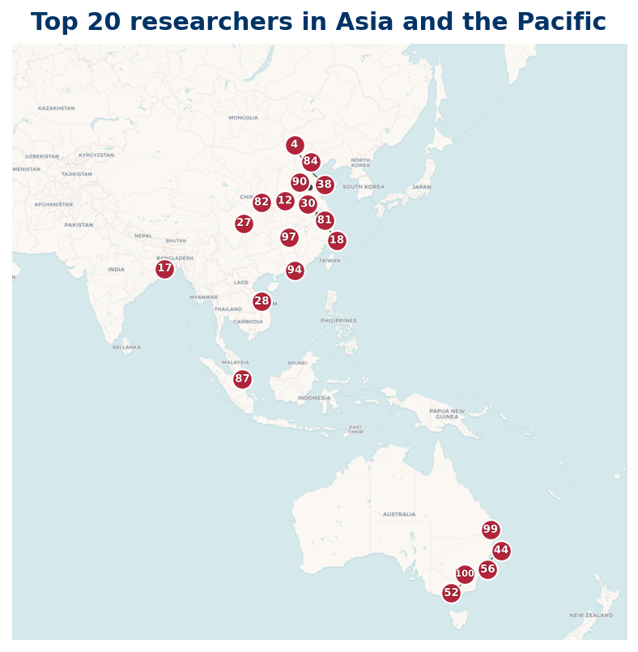

Listing
| Rank | Name | Institution | Country |
|---|---|---|---|
| 4 | Jiamin Li | China University of Mining and Technology (Beijing) | CN |
| 12 | Wang, Tianze | Luoyang Normal University | CN |
| 17 | Stephan Baier | Ramakrishna Mission Vivekananda Educational and Research Institute | IN |
| 18 | Xianke Zhang | Shaoxing University | CN |
| 27 | Huixi Li | Sichuan University | CN |
| 28 | Apoloniusz Tyszka | Hue University | VN |
| 30 | Cai, Yingchun | Jiangsu Academy of Agricultural Sciences | CN |
| 38 | Min Zhang | Tsinghua University | CN |
| 44 | Igor E. Shparlinski | UNSW Sydney | AU |
| 52 | Daniel R. Johnston | Australian National University | AU |
| 56 | Liangyi Zhao | UNSW Sydney | AU |
| 81 | Hao Pan | Nanjing University of Finance and Economics | CN |
| 82 | Zhefeng Xu | Northwest University | CN |
| 84 | Jia, Chao Hua | Academy of Mathematics and Systems Science, Chinese Academy of Sciences | CN |
| 87 | Jose I. Latorre | Centre for Quantum Technologies | SG |
| 90 | Lü, Guangshi | Shandong University | CN |
| 94 | Ben Kane | University of Hong Kong | HK |
| 97 | Jie Wu | Hunan Agricultural Products (China) | CN |
| 99 | Adrian W. Dudek | The University of Queensland | AU |
| 100 | Valeriia Starichkova | University of Canberra | AU |